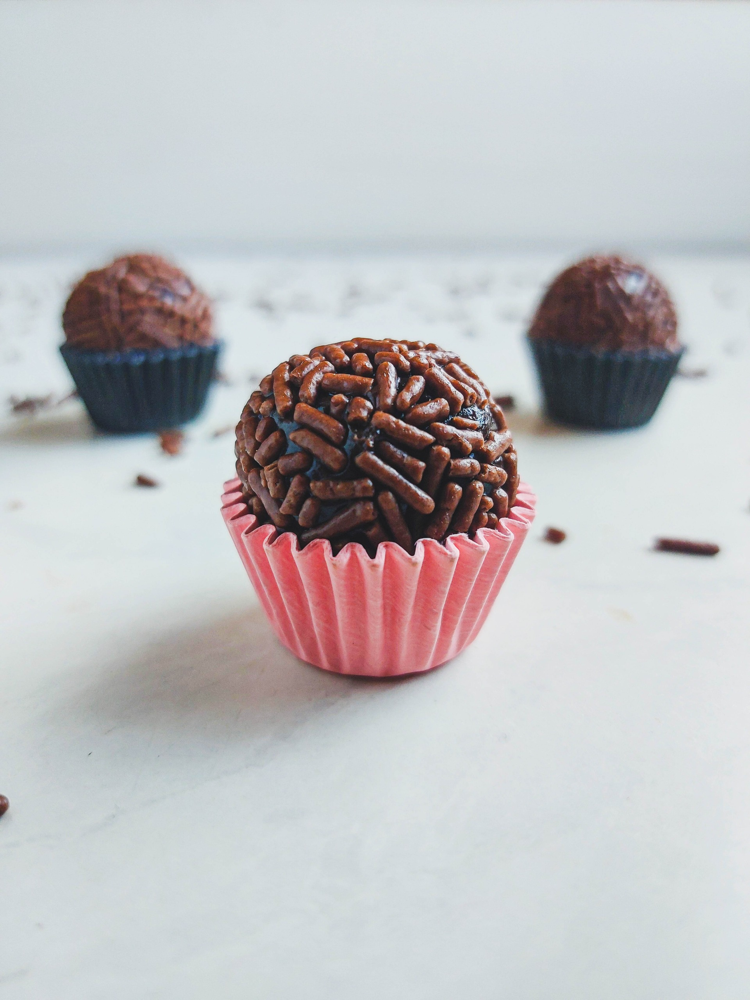

Docinhos
Clássicos
Beijinho
O doce que te faz suspirar de prazer! Com Leite Moça Integral e Coco fresco, cada mordida é uma explosão de sabor tropical! Deixe-se envolver por essa delícia feita pela 102Doces e desfrute de momentos doces e encantadores!
Brigadeiro
É uma explosão de sabor que derrete na boca! A 102Doces utiliza materiais de excelencia qualidade, Feito com Leite Moça Integral e Cacau, cada mordida é uma festa irresistível. Delicie-se com esse docinho dos deuses e deixe-se levar pela doçura e prazer!
Casadinho
Uma combinação divina! O casadinho é a mistura perfeita entre o brigadeiro e o brigadeiro de leite em pó, utilizando Leite Moça Integral, Cacau e o delicioso Leite Ninho. Essa dupla imbatível irá encantar seu paladar com sua cremosidade e sabor irresistível!
Cajuzinho
Uma explosão de sabores! Com Leite Moça Integral, Amendoim Moído e Cacau, o cajuzinho é uma tentação irresistível. Deixe-se levar pelos aromas e texturas desse docinho tradicional e surpreenda-se com cada mordida
Palha Italiana
Com Leite Moça Integral, Cacau e Biscoito Maizena, esse brigadeiro traz o sabor clássico da palha italiana em uma versão cremosa. A combinação do cacau com o biscoito maizena proporciona uma textura deliciosa e uma experiência irresistível.
Veja nossos preços